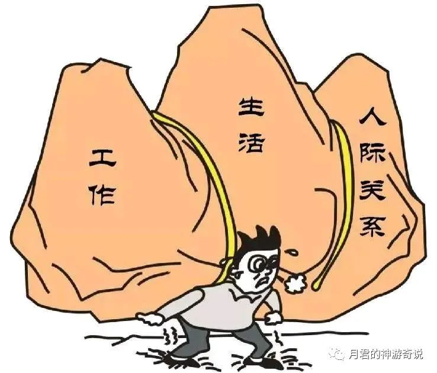
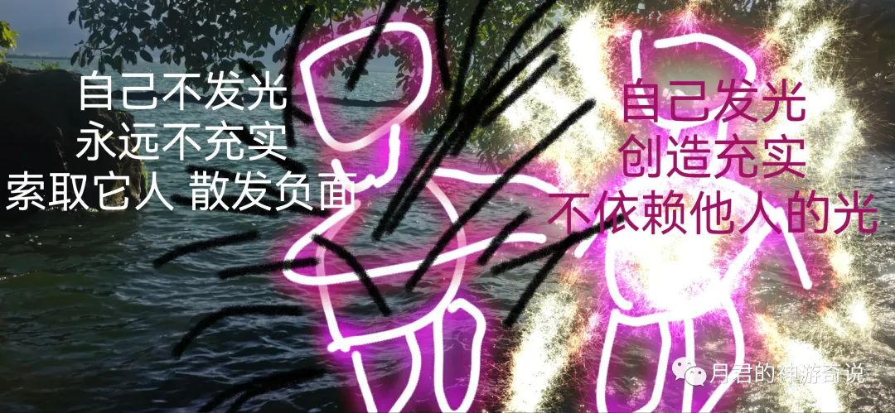
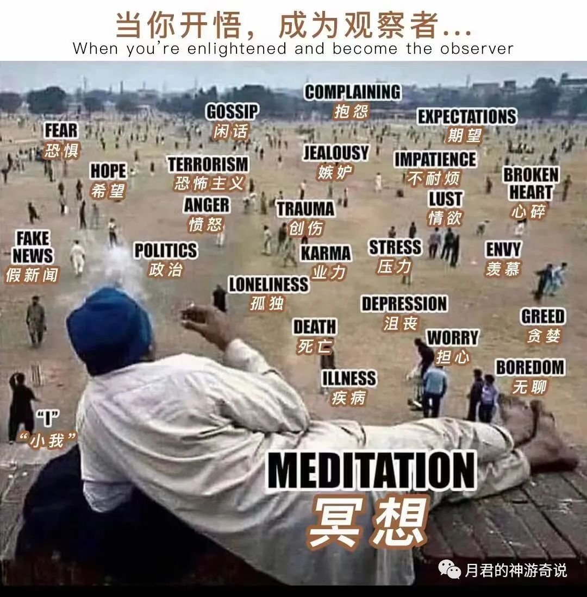

月君：执着卡点 破执着的方法
原创 月君 月君的神游奇说 2022-10-31 06:49 发表于北京
原文链接(长) 原文链接(短)
1，物质匮乏感、无安全感等
因为没有钱而匮乏，没有房和车而没有安全感，需要房子车子给自己带来安全感和匮乏感。
这是物质层面。
有了房子和车子，金钱。还是匮乏和没有安全感。
这些是因为你需要的并不是这些。这些带给你的只有带来面子和虚荣感等。
周围人靠近你也是因为这些物质，而不是喜欢你这个人如何如何，一旦没有。周围人全部离你而去。无任何感情可言。因为是物质的交易，因为物质才靠近你。
你用什么外在吸引的，终会离你而去。
自信和安全感不是完全来自这些。
更多是情感上的，心灵上的。
因为外求的得到是短暂的，内在的充实不够。拥有再多物质也是空虚的。

2，亲情爱情友情的缺乏和陪伴，很缺爱。
原生家庭得不到家人的爱，自己很需要。
感情得不到满足。
很依赖别人给爱自己。
根源是：否认自己可以拥有爱，可以创造爱，自己都没爱，自己都没光，怎么能感受到世界和他人的另一面？只会一味的索取，那么整个人都是空虚的，无论别人对你好或者不好，都满足不了你。因为你只会索取和依赖别人能量，从外在寻找能量，陷入了幻相中。而不自己发光。那么永远都不充实自在。
能量是无穷无尽的，光和爱是无穷无尽的，一切都是内心和意识自发创造的。
只要自己保持内心的平静和自由，光和爱就从内在升起。覆盖自己的能量场。自己变的充满光明和充实平静。看任何人事物都带着平静和友好看待。
如果内心是索取和依赖以及攻击，那么负面和仇恨就从内心创造出来。覆盖自己的能量场。那么你就充满着负面。极度不安静，负面和杂念非常多。

3，心灵的空虚。
当你拥有了物质基础充实和情感的充实，为何还会空虚？
因为这些也是短暂而不是真实永恒的。
心灵的本质是看破他们，一切感觉和体验，都是由心而生。由心而定义。
你需要找寻的是这些体验的感觉和想法情绪来自哪里？？？
内观合一，释放执着的方法非常简单。
1，静下来，内观自己，感受当下自己缺乏的或者痛苦的，这些感觉和想法情绪。合一成为它们，你就是它们。完全融入。
2，如果是当下，把意识放在当下这个感觉，把自己代入，随后静静的观察和感受出现的感觉和想法情绪，还有印象中、画面中的人事物，直到自己再也没有情绪波动和评判攻击他们为止，心很平静的看待这个人事物以及自己需要的。那么就破除执着了。
3，如果是曾经的事情，过不去的。就静下来，去回亿、回想当时自己不敢面对的场景，还有那种感觉和情绪，重新面对人事物和情绪。把自己代入其中。也是如2所言。
4，多次内观过不去的卡点和执着，就是重新不再定义它，重新闯关体验。
一切因果业力都是感觉和情绪的作用，1次2次3次不行。
就每天回亿、回想，深深合一那个让自己痛苦的地方，再次面对，静静感受和观察再次浮现的评判攻击和情绪。直到再也不执着它们，再也不评判它们，再也不情绪攻击它们，就过关了。闯关成功了。
心灵的幻相通关，心性就会升华，你的频率就会提高。
纠缠的业果脱落，自己获得解脱。不再执着对或者错，去抓着那个人，那个事情不放。
记住：不再定义绑架自己和对方，不再评判攻击，不再需要从他人身上获取。那么你就看到了自己，是自己在创造执着和抓着眼前的东西不放。
一切皆是如此。一切都是自己创造的体验，当不你再执着它们，它们还是他它们。你还是你，并且你自由了。
内观，观心，修心即是这样。
外求者：遇到问题，放弃自己独立思考的机会，选择外求，忽略和逃避。
内求者：遇到问题，选择反思每个问题背后的思想行为和情绪反应，去除根深蒂固的习性。
不执着自己做对或者做错，都不是自己，只有观察者是自己，一切体验都是幻相，善恶不执。才能体验而不执着。彻底脱离这些低频高频所造的感觉。
做错了，不执着自己错了。不把这个错抓手里。继续拿去伤害自己和别人。
做对了，不执着自己对的。不把这个对抓在手里。继续拿去伤害自己和别人。
都是幻相，罪业皆空，心就完全解脱了。
不要被定义，你是无限自由的灵魂。

关注本公众号，了解更多修行知识，转发分享本文，让更多人受益。